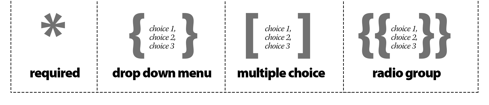

Quickly build form code from pasted questions using the formSaberJS library.
Dragging and dropping is fun, but pasting is much smarter.
Press submit HTML output will appear here...

Syntax guide:
If the value is required include an asterisk * in the question like so: First Name *
If the value is a textarea (long multi-line answer) include the keyword TEXTAREA in the question like so: Comments TEXTAREA
If the value is a checkbox include the keyword CHECKBOX in the question like so: Please contact me CHECKBOX
If the value is a checkbox AND it is checked by default include the keyword CHECKED in the question like so: Please contact me CHECKED
If the value is a file upload, use the keyword FILE
If the value is a drop down menu, list the responses in curly brackets after the question > {yes,no,maybe}
If the value is a multiple selection checkbox menu, list the responses in square brackets after the question > [start,middle,finish]
If the value is a radio button group, list the responses in double curly brackets after the question > {{start,middle,finish}}
If the value is a separator or headline, include the keyword HEADLINE in the question like so: Part 2: Personal information HEADLINE
If the value is a note, include NOTE in the question like so: We use this information to better serve our customers NOTE
The form action can be specified by including ACTION in the question like so: ACTION http://silvercrayon.com/fsendpoint/ The form method can be specified by including METHOD in the question Becasue the action and method are not form inputs, but attributes, hidden divs are inserted into the form. Use the innerHTML method to access those values and place them in the form tag.
Product Survey HEADLINE
Your opinion counts! NOTE
How often do you typically use our product? { Once a year, Daily, Weekly, Once a month, Every 2-3 months ,2-3 times a year, less often, Do not use }
Describe the overall quality in a few words TEXTAREA
Our product performed as expected CHECKED
Our product performed better than expected CHECKBOX
Our product Usage experience {{Somewhat Satisfactory, Very Satisfactory, Delightfully}}
After purchase service, warranty, repair, customer service etc: [Somewhat Satisfactory, Very Satisfactory, Delightfully]
ACTION http://silvercrayon.com/fsendpoint/
METHOD post
Part : The Basics HEADLINE
Name
Email
Do you make online purchases?{yes,no,maybe,always,sometimes}
Best time to reach you[am,pm,weekend,do not call]
Title
Marital status{married,single,rather not say}
NOTE We use this information to better serve our customers
What is your age
NOTE We use this information to better serve our customers
What do you like to do for fun
What is your race
Do you use Facebook{all the time,sometimes,almost never,never}
Do you use Twitter{all the time,sometimes,almost never,never}
Do you use Slack{all the time,sometimes,almost never,never}
Do you use Skype{all the time,sometimes,almost never,never}
Do you use Instagram{all the time,sometimes,almost never,never}
Do you use Yahoo{all the time,sometimes,almost never,never}
Do you use Google Plus{all the time,sometimes,almost never,never}
How did you hear about us?{search,friend,TV ad,other}
Twitter name
Linkedin URL
How often do you typically use the product?{Once a year,Daily,Weekly,Once a month,Every months, times a year,less often,Do not use }
How did your (PRODUCT) perform? HEADLINE
Overall quality{Miserably,Somewhat Satisfactory,Very Satisfactory,Delightfully}
Value{Miserably,Somewhat Satisfactory,Very Satisfactory,Delightfully}
Purchase experience{Miserably,Somewhat Satisfactory,Very Satisfactory,Delightfully}
Installation or first use experience{Miserably,Somewhat Satisfactory,Very Satisfactory,Delightfully}
Usage experience{Miserably,Somewhat Satisfactory,Very Satisfactory,Delightfully}
After purchase service (warranty, repair, customer service etc){Miserably,Somewhat Satisfactory,Very Satisfactory,Delightfully}
How important was performance on these attributes?HEADLINE
Overall quality{Not Important,Somewhat Important,Important,Very Important}
Value{Not Important,Somewhat Important,Important,Very Important}
Purchase experience{Not Important,Somewhat Important,Important,Very Important}
Installation or first use experience{Not Important,Somewhat Important,Important,Very Important}
Usage experience{Not Important,Somewhat Important,Important,Very Important}
After purchase service (warranty, repair, customer service etc){Not Important,Somewhat Important,Important,Very Important}
Overall how satisfied were you with your new (PRODUCT)?{Not at all satisfied,Somewhat Satisfied,Satisfied,Very Satisfied,Delighted}
Have you ever contacted customer service?{Yes,No}
If you contacted (COMPANY) customer service, have all problems been resolved to your complete satisfaction?{Yes by the company or its representatives, Yes by me or someone outside the company, No the problem was not resolved}
Based on your awareness of (PRODUCT/SERVICE),is it better, the same, or worse than other brands of (ENTER CATEGORY}?{Much Better,Better,About the same,Worse,Much Worse}
Please share with us a few things (Product/Service) could do better. TEXTAREA
Based on your experience with (PRODUCT), how likely are you to buy (PRODUCT) again?{Definitely will,Probably will,Might or might not,Probably will not,Definitely will not}
Based on your experience with (PRODUCT), would you recommend this product to a friend?{Definitely will,Probably will,Might or might not,Probably will not,Definitely will not}
If you would like to share any additional comments or experiences about (PRODUCT), please enter them below. TEXTAREA
Social Security Number
Are you a Citizen of the U.S.A.?{yes,no}
How do you plan to get to work?[Mass Transit,auto,other]
Name and Phone Number of the Person to be Notified for Emergency
Have you ever been convicted of a felony or misdemeanor (other than a traffic violation)?{yes,no}
If you answered “Yes” to question above please explain TEXTAREA
Your age{under 18 ,16 ,21 OR OLDER}
Name of Junior High School and Address TEXTAREA
Dates Attended From (mo/yr) and To (mo/yr)
Name of High School and Address TEXTAREA
Dates Attended From (mo/yr) and To (mo/yr)
Did you Graduate?{yes,no}
Average
Name of College and Address TEXTAREA
Dates Attended From (mo/yr) and To (mo/yr)
Did you Graduate?{yes,no}
Number of College Credit Hours
Major
Average
Name of Other Institution and Address TEXTAREA
Dates Attended From (mo/yr) and To (mo/yr)
Did you Graduate?{yes,no}
Number of Credit Hours
Major
Average
Extracurricular Activities TEXTAREA
Currently enrolled in High School/Study program?{yes,no}
Hourly Starting Wage Desired
Date Available to start
Days and Times Available to Work TEXTAREA
hobbies and special interests TEXTAREA
Company No. (Present or most recent employer)
Address/Phone Number TEXTAREA
Employed (Mo/Yr) From
Employed (Mo/Yr) To
Rate of Pay Starting
Rate of Pay Ending
Average Number of Hours worked per week
Position(s) held
Supervisor’s Name/Position
Describe your Duties TEXTAREA
May we contact this employer?{yes,no}
Reason for Leaving
Days Lost from work due to illness
Days Lost from work due to injury
Days Lost from work due to other
Company No.
Address/Phone Number TEXTAREA
Employed (Mo/Yr) From
Employed (Mo/Yr) To
Rate of Pay Starting
Rate of Pay Ending
Average Number of Hours worked per week
Position(s) held
Supervisor’s Name/Position
Describe your Duties TEXTAREA
May we contact this employer?{yes,no}
Reason for Leaving
Days Lost from work due to illness
If you didn’t have to sleep, what would you do with the extra time?
What’s your favorite piece of clothing you own / owned?
What hobby would you get into if time and money weren’t an issue?
What would your perfect room look like?
How often do you play sports?
What fictional place would you most like to go?
What job would you be terrible at?
When was the last time you climbed a tree?
If you could turn any activity into an Olympic sport, what would you have a good chance at winning medal for?
What is the most annoying habit that other people have?
What job do you think you’d be really good at?
What skill would you like to master?
What would be the most amazing adventure to go on?
If you had unlimited funds to build a house that you would live in for the rest of your life, what would the finished house be like?
What’s your favorite drink?
What state or country do you never want to go back to?
What songs have you completely memorized?
What game or movie universe would you most like to live in?
What do you consider to be your best find?
Are you usually early or late?
What pets did you have while you were growing up?
When people come to you for help, what do they usually want help with?
What takes up too much of your time?
What do you wish you knew more about?
What would be your first question after waking up from being cryogenically frozen for 100 years?
What are some small things that make your day better?
Who’s your go to band or artist when you can’t decide on something to listen to?
What shows are you into?
What TV channel doesn’t exist but really should?
Who has impressed you most with what they’ve accomplished?
What age do you wish you could permanently be?
What TV show or movie do you refuse to watch?
What would be your ideal way to spend the weekend?
What is something that is considered a luxury, but you don’t think you could live without?
What’s your claim to fame?
What’s something you like to do the old-fashioned way?
What’s your favorite genre of book or movie?
How often do you people watch?
What have you only recently formed an opinion about?
What’s the best single day on the calendar?
What are you interested in that most people haven’t heard of?
How do you relax after a hard day of work?
What was the best book or series that you’ve ever read?
What’s the farthest you’ve ever been from home?
What is the most heartwarming thing you’ve ever seen?
What is the most annoying question that people ask you?
What could you give a 40-minute presentation on with absolutely no preparation?
If you were dictator of a small island nation, what crazy dictator stuff would you do?
What is something you think everyone should do at least once in their lives?
Would you rather go hang gliding or whitewater rafting?
What’s your dream car?
What’s worth spending more on to get the best?
What is something that a ton of people are obsessed with but you just don’t get the point of?
What are you most looking forward to in the next 10 years?
Where is the most interesting place you’ve been?
What’s something you’ve been meaning to try but just haven’t gotten around to it?
What’s the best thing that happened to you last week?
What piece of entertainment do you wish you could erase from your mind so that you could experience for the first time again?
If all jobs had the same pay and hours, what job would you like to have?
What amazing thing did you do that no one was around to see?
How different was your life one year ago?
What’s the best way to start the day?
What quirks do you have?
What would you rate 10 / 10?
What fad or trend do you hope comes back?
What’s the most interesting piece of art you’ve seen?
What kind of art do you enjoy most?
What do you hope never changes?
What city would you most like to live in?
What movie title best describes your life?
Why did you decide to do the work you are doing now?
What’s the best way a person can spend their time?
If you suddenly became a master at woodworking, what would you make?
Where is the most relaxing place you’ve ever been?
What is the luckiest thing that has happened to you?
Where would you rather be from?
What are some things you’ve had to unlearn?
What are you looking forward to in the coming months?
What website do you visit most often?
What one thing do you really want but can’t afford?
Where do you usually go when you when you have time off?
Where would you spend all your time if you could?
What is special about the place you grew up?
What age do you want to live to?
What are you most likely to become famous for?
What are you absolutely determined to do?
What is the most impressive thing you know how to do?
What do you wish you knew more about?
What question would you most like to know the answer to?
Somewhat personal questions to get to know someone
What question can you ask to find out the most about a person?
When was the last time you changed your opinion / belief about something major?
What was the best compliment you’ve received?
As the only human left on Earth, what would you do?
Who inspires you to be better?
What do you want your epitaph to be?
What did you think you would grow out of but haven’t?
In what situation or place would you feel the most out of place in?
What’s the dumbest thing you’ve done that actually turned out pretty well?
They say that everyone has a book in them. What would your book be about?
What is something you will NEVER do again?
What do you spend the most time thinking about?
What are some of the events in your life that made you who you are?
What do you wish your brain was better at doing?
There are two types of people in this world. What are the two types?
What is the strangest thing you have come across?
What is something you are certain you’ll never experience?
What dumb accomplishment are you most proud of?
If you could make one rule that everyone had to follow, what rule would you make?
What are you addicted to?
What stereotype do you completely live up to?
What is something you can never seem to finish?
As you get older, what are you becoming more and more afraid of?
What is one of your favorite smells?
What would be the scariest monster you could imagine?
What song or artist do you like but rarely admit to liking?
What would you do if you knew you were going to die in one hour?
What book impacted you the most?
If you had to change your name, what would you change it to?
If life is a game, like some people say, what are some of the rules?
Who is / was your most interesting friend?
Have you ever given to any charities?
What is something that your friends would consider “so you”?
What risks are worth taking?
What can you not get right, no matter how many times you try?
If you could convince everyone in the world to do one thing at one point in time, what would that thing be?
What do you take for granted?
What would be some of the most annoying things about having yourself as a roommate?
What’s something you are self-conscious about?
What personality trait do you value most and which do you dislike the most?
What small gesture from a stranger made a big impact on you?
What gets you fired up?
What challenging thing are you working through these days?
What irrational fear do you have?
What’s the best and worst piece of advice you’ve ever received?
If you had a clock that would countdown to any one event of your choosing, what event would you want it to countdown to?
What makes a good life?
What do you strongly suspect but have no proof of?
What’s the last adventure you went on?
When do you feel truly “alive”?
What was the most memorable gift you’ve received?
What chapters would you separate your autobiography into?
What do you like most about your family?
What do you hope your last words will be?
What stat for your life would you most like to see?
What are three of the most significant numbers in your life?
What could you do with two million dollars to impact the most amount of people?
If you were put into solitary confinement for six months, what would you do to stay sane?
What’s something horrible that everyone should try at least once?
What fact are your resigned to?
Have you ever saved someone’s life?
What were some of the turning points in your life?
What would a mirror opposite of yourself be like?
What are you really good at, but kind of embarrassed that you are good at it?
What are three interesting facts about you?
Which of your scars has the best story behind it?
What’s the title of the current chapter of your life?
What’s the hardest lesson you’ve learned?
What mistake do you keep making again and again?
What do people think is weird about you?
When people look at you, what do you think they see / think?
What have you created that you are most proud of?
If you could make a 20 second phone call to yourself at any point in your life present or future, when would you call and what would you say?
What annoys you most about the in-groups you are a part of?
What do you have doubts about?
What do you want to be remembered for?
What are some of your personal “rules” that you never break?
What do you regret not doing or starting when you were younger?
If you could have a never-ending candle that smelled like anything you wanted, what fragrance would you want it to be?
What’s the best thing about you?
What bends your mind every time you think about it?
What’s the best thing you got from your parents?
What’s one responsibility you really wish you didn’t have?
What is the “holy grail” of your life?
If your childhood had a smell, what would it be?
What are the top three things you want to accomplish before you die? How close are you to accomplishing them?
What do you wish you could tell yourself 10 years ago? What do you think you’ll want to tell your current self 10 years from now?
In your group of friends, what role do you play?
Among your friends or family, what are you famous for?
What is the biggest lesson you never learned?
What’s the most immature thing that you do?
Open book
If your life was a book, what would its title be?
What’s the best and worst thing about getting older?
What’s something that happened or something that someone said that changed how you view the world?
What are you most likely very wrong about?
If you had a personal flag, what would be on it?
What lifestyle change have you been meaning to make for a while now?
What would be your spirit animal?
What incredibly strong opinion or belief do you have that is completely unimportant in the grand scheme of things?
What chance encounter changed your life forever?
If you could have a video of any one event in your life, what event would you choose?
If you were forced to relive one 10-minute block of your life again and again for all eternity, what 10 minutes of your life would you choose?
Very personal questions to get to know someone better
How do you hope you’ll change as a person in the future?
What keeps you up at night?
What’s the most surprising self-realization you’ve had?
What’s the most illegal thing you’ve done?
What lie do you tell most often?
What do you regret not doing?
What gives your life meaning?
What do you most often look down on people for? What do you think other people look down on you for?
What bridges do you not regret burning?
What are you most insecure about?
How do you get in the way of your own success?
What’s one thing you did that you really wish you could go back and undo?
What are you afraid people see when they look at you?
ACTION http://silvercrayon.com/fsendpoint/
METHOD post